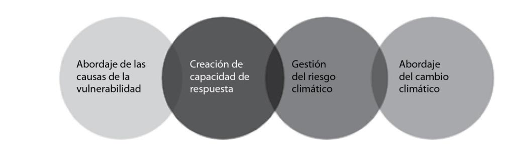
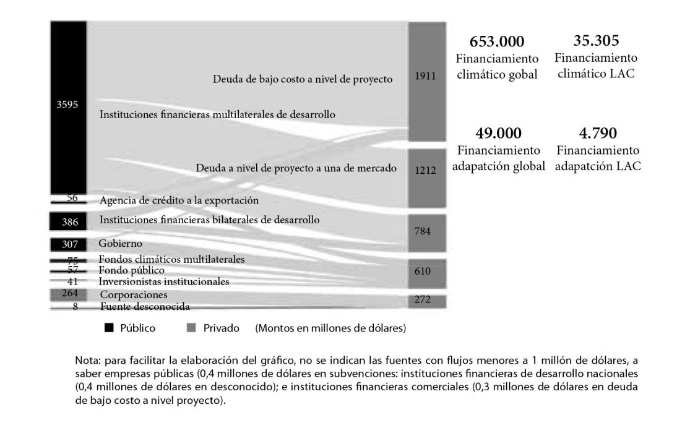

CAPÍTULO 5
Financiamiento para la adaptación:
Desafíos y oportunidades
Introducción
En los últimos años se han observado cambios en las variables climáticas a nivel global, variaciones que generan impactos en los ecosistemas, poblaciones, infraestructura y sistemas productivos. Según el informe Sixth Assessment Report (AR6) del Grupo Intergubernamental de Expertos sobre el Cambio Climático (IPCC), para fin de siglo se tendrán riesgos severos derivados de estos cambios, independientemente de la trayectoria de emisiones que se adopte. No obstante, pueden ser reducidos con acciones de adaptación (Ministerio de Ambiente y Desarrollo Sostenible de la República Argentina, 2022), pero se requieren de manera ambiciosa y acelerada (Programa de Naciones Unidas para el Medio Ambiente, 2022).
Para avanzar en la planificación e implementación de acciones de adaptación se requiere un financiamiento accesible, adecuado y predecible (Convención Marco de las Naciones Unidas sobre el Cambio Climático, 2019). En línea con esto, en el artículo 4 de la Convención Marco de las Naciones Unidas sobre el Cambio Climático (1992) se especifica, coherente con el principio de responsabilidades comunes pero diferenciadas, que "los países desarrollados proporcionarán recursos financieros nuevos y adicionales para cubrir la totalidad de los gastos convenidos que efectúen las Partes que son países en desarrollo". En la Conferencia de las Partes (COP) de la Convención de 2009 en Copenhague, los países desarrollados se comprometieron a movilizar 100 billones de dólares por año para 2020 hacia los países en desarrollo. Las fuentes de esto podían ser diversas (Convención Marco de las Naciones Unidas sobre el Cambio Climático, 2019). Más tarde, en la COP 21 en 2015 en París, se acordó extender el monto anual hasta 2025 y en el Acuerdo de París se hizo referencia a buscar un equilibrio entre el financiamiento de la adaptación y mitigación. Luego, en la COP 26 en 2021 en Glasgow, se solicitó urgentemente a los países en desarrollo que dupliquen el flujo del financiamiento específico para la adaptación con respecto a 2019 para el año 2025.
Según el Adaptation Gap Report elaborado por el Programa de Naciones Unidas para el Medio Ambiente (UNEP, por sus siglas en inglés) en 2022, se estima que los costos de la adaptación en los países en desarrollo serán entre 150 y 340 billones de dólares al año en 2030, y entre 315 y 565 billones de dólares al año en 2050. Este aumento se debe a los mayores cambios en el clima a medida que transcurren los años. Asimismo, este informe estima que las necesidades de financiamiento promedio para la adaptación de los países en desarrollo serán de 202 billones de dólares anuales para el período 2021-2030. Estos montos siguen siendo superiores a los 100 billones de dólares a movilizar anualmente por los países desarrollados, más aún considerando que la mitad debería corresponder a la mitigación.
Al analizar estos números, se vuelve fundamental para los países en desarrollo, además de seguir bregando a nivel internacional por una mayor movilización de fondos para la implementación de las políticas climáticas nacionales, contar con instrumentos de planificación de la adaptación y con estrategias de financiamiento climático que faciliten el flujo de fondos para la implementación de políticas de adaptación.
El presente capítulo expone sobre los distintos aspectos de este desafío. Inicia aclarando qué se entiende por financiamiento climático, los instrumentos financieros existentes y el detalle del estado actual del financiamiento de la adaptación a nivel global y regional. Luego, se expone sobre el rol del sector privado y las barreras para avanzar en el financiamiento de la adaptación. Por último, se indican posibles líneas de acción por parte del sector público para hacer frente a estas barreras.
Qué entendemos por financiamiento climático
Según el Comité Permanente de Finanzas de la Convención Marco de las Naciones Unidas sobre el Cambio Climático (UNFCCC SCF, por sus siglas en inglés), el financiamiento se considera como climático si "tiene como objetivo reducir las emisiones y mejorar los sumideros de gases de efecto invernadero, reducir la vulnerabilidad, y mantener y aumentar la resiliencia de los sistemas humanos y ecológicos a los impactos negativos del cambio climático" (2014). En otras palabras, implica el financiamiento de medidas de mitigación o de adaptación al cambio climático.
Actualmente no existe una taxonomía climática acordada a nivel global, es decir una clasificación de actividades de mitigación o adaptación al cambio climático, ni una única metodología de etiquetado climático que defina criterios específicos para definir cuándo un proyecto es climático o no. Esto varía tanto entre países, como entre los sectores público y privado, y dificulta su seguimiento.
Entre las metodologías existentes para definir cuándo un proyecto es de mitigación o adaptación al cambio climático, se pueden nombrar las de los bancos multilaterales de desarrollo (MDB, por sus siglas en inglés), la del Comité de Asistencia al Desarrollo (DAC, según sus siglas en inglés) de la Organización para la Cooperación y el Desarrollo Económicos (OCDE), y la de los fondos multilaterales del clima, entre otros.
Para ejemplificar, la metodología de los MDB para definir si un proyecto es de adaptación contempla los siguientes criterios: (1) realiza un análisis de riesgos climáticos, identificando claramente las vulnerabilidades; (2) el objetivo del proyecto de inversión incluye la reducción de alguna de las vulnerabilidades identificadas; y (3) las actividades del proyecto aportan a la reducción de las vulnerabilidades identificadas (European Investment Bank, 2022).
En particular, la identificación de los proyectos de adaptación presenta un desafío adicional, dado que en muchos casos resulta difícil distinguirlos de un proyecto de desarrollo. Los primeros están intrínsecamente ligados a las políticas de desarrollo (European Investment Bank, 2022), ya que, al abordar la vulnerabilidad estructural de un sector de la población en específico, también se reducen los riesgos climáticos a los que puede estar expuesto.
Para una mayor claridad sobre esto, McGray et al. (2007) sitúan las políticas de adaptación y de desarrollo en un continuo, que comienza en las que abordan las causas de la vulnerabilidad (por ejemplo, obras de acceso al agua). Luego pasan por las iniciativas que construyen "sistemas robustos para resolver problemas" (McGray et al., 2007) y que aportan a mejores capacidades de respuesta (por ejemplo, cuarteles de bomberos). Siguen por las que incorporan información climática en el proceso de toma de decisiones para reducir impactos (por ejemplo, defensas hídricas) y concluyen en las acciones centradas en abordar los riesgos climáticos por fuera de la variabilidad climática histórica, y que responden, directamente, al cambio climático actual.

Figura 1. Continuum de las políticas de adaptación: desde el desarrollo al cambio climático.
Fuente: Ministerio de Ambiente y Desarrollo Sostenible de la República Argentina (2022), adaptado de McGray, Hammill y Bradley (2007).
Disponer de información sobre las inversiones climáticas en los distintos sectores facilita la identificación de necesidades a nivel global y la formulación de estrategias de manera coordinada entre el sector privado y el financiamiento climático internacional (Climate Policy Initiative, 2022). Asimismo, contar con la aplicación de metodologías de etiquetado climático resulta clave para monitorear los esfuerzos hacia el abordaje del cambio climático y facilitar el alineamiento de las políticas públicas y de las iniciativas privadas con los objetivos globales y nacionales de acción climática a través de la priorización de proyectos (Ministerio de Ambiente y Desarrollo Sostenible de la República Argentina, 2022). También permite contar con financiamiento predecible y consistente que aporte a la sostenibilidad del proceso de adaptación: iterativo y de largo plazo (Convención Marco de las Naciones Unidas sobre el Cambio Climático, 2019).
Flujos de financiamiento para la adaptación
Para avanzar en el financiamiento de la adaptación, existen distintas fuentes que pueden ser públicas, privadas, domésticas o internacionales. Asimismo, se pueden identificar, entre ellas, distintos organismos, tales como bancos multilaterales de desarrollo, gobiernos, corporaciones, hogares, instituciones financieras privadas, entre otros. Por último, se tienen diferentes instrumentos para su implementación. En el siguiente cuadro se enumeran los instrumentos más frecuentemente utilizados.
Cuadro 1. Principales instrumentos financieros
Subvención: transferencias realizadas en efectivo, bienes o servicios que no requieren devolución.
Deuda: deuda a nivel de proyecto, empresa o institución financiera que depende del flujo de efectivo de un proyecto para su pago. Dentro de esta categoría se pueden identificar aquellos préstamos a tasa de mercado y los concesionales. Estos últimos se refieren a préstamos otorgados en términos más favorables que los que prevalecen en el mercado (tasas de interés bajas o nulas, plazos de reembolso o de gracia más largos).
Inversión de capital (equity): inyección de capital para hacer crecer la operación de un proyecto o una empresa y apalancar recursos. Mitiga el riesgo para otros inversores. Es utilizado cuando la probabilidad de fracaso es alta, pero con probabilidad positiva de éxito, por lo tanto, de retorno para el tenedor del capital.
Garantías: compromisos en los que un garante se compromete a cumplir las obligaciones de un prestatario frente a un prestamista en caso de incumplimiento (o incumplimiento por parte del prestatario de sus obligaciones) a cambio de una comisión.
Bonos: es una inversión de deuda en la que un inversor presta dinero a una entidad corporativa o gubernamental que toma prestados los fondos durante un periodo de tiempo definido a una tasa de interés fija. El bono puede ser negociado en un intercambio y comprado por cualquier persona1.
Fuente: adaptado de Climate Policy Initiative (2022) y Green Climate Fund (2013).
En términos generales, resulta complejo y difícil establecer con certeza los flujos de financiamiento para la adaptación. Esto se debe, en gran medida, a la "fragmentación de la arquitectura del financiamiento climático, que está compuesta por múltiples fuentes y organismos de financiamiento, instrumentos y organismos de implementación" (Convención Marco de las Naciones Unidas sobre el Cambio Climático, 2019). A pesar de esto, desde diversos espacios se han realizado esfuerzos para dar cuenta de su progreso a lo largo del tiempo.
En 2022, la Climate Policy Initiative (CPI) publicó el informe Global Landscape of Climate Finance: A Decade of Data 2011-2020, mediante el cual se mostró el monitoreo de la inversión climática primaria privada y pública a nivel global. Para prevenir el doble conteo, se compilaron los datos referidos a los siguientes instrumentos: subvenciones, deuda a nivel de proyecto a tasa de mercado y concesionales, inversión de capital a nivel de proyecto y los componentes de deuda directa y capital del financiamiento basado en el balance general (empresas e instituciones financieras). Vale aclarar que los instrumentos de gestión del riesgo, como garantías y seguros, no se incluyeron debido a que "los desembolsos reales de estos instrumentos dependen de eventos futuros inciertos" (ClimatePolicy Initiative, 2022).
Mediante ese informe se estimó que la inversión total en acción climática anual promedio entre los años 2019 y 2020 fue de 653.000 millones de dólares. De este total, sólo el 7,5% corresponde a la adaptación (49.000 millones de dólares); lo que refleja la preponderancia de la mitigación sobre la adaptación en el flujo del financiamiento global, contrario a lo establecido en el artículo 9.4 del Acuerdo de París, en el que se indica que "en el suministro de un mayor nivel de recursos financieros se debería buscar un equilibrio entre la adaptación y la mitigación" (Convención Marco de las Naciones Unidas sobre el Cambio Climático, 2015).
Igualmente, aunque la mitad del financiamiento climático global proviene del sector privado, casi la totalidad de las medidas de adaptación fueron provistas por el sector público (98%), y en Latinoamérica y el Caribe (LAC) esa proporción disminuye cinco puntos (Climate Policy Initiative, 2022). De cualquier manera, el financiamiento privado de la adaptación resulta difícil de monitorear debido a la diversidad de actores que agrupa, a la, generalmente, insuficiente identificación, y al poco seguimiento de las inversiones en adaptación. Esto implica que suele subestimarse su aporte.
Con respecto a los instrumentos financieros, el 59% corresponde a deuda, de la cual el 88% fue a tasa de mercado. En el caso de la adaptación, el porcentaje de deuda sube al 70% y sólo se subvenciona el 19%. El predominio del uso de deuda como instrumento financiero implica un problema para los países en desarrollo por varios motivos. Los países emergentes presentan grandes niveles de endeudamiento (en particular LAC cuenta con los mayores (Ocampo y Eyzaguirre, 2023), por lo que el financiamiento de la adaptación a través de este tipo de instrumentos significa un gasto mayor al existente por pago de intereses (United Nations Environment Programme, 2018)2. Asimismo, para los países en desarrollo el costo de capital es mayor y se encuentra en aumento debido a la vulnerabilidad climática (United Nations Environment Programme, 2018). Adicionalmente, en caso de contar con una mayor proporción de la deuda en moneda extranjera3, como la mayoría de los países de LAC, se pueden tener impactos en la sostenibilidad de la deuda pública debido a contextos de alta incertidumbre, devaluación o afectaciones a las exportaciones (Ocampo y Eyzaguirre, 2023). Lo anterior refleja la importancia y urgencia para los países de invertir en medidas de adaptación y resiliencia, tanto para mejorar los costos de deuda como para disminuir los riesgos que pueden afectar su sostenibilidad, como el caso de la disminución de exportaciones de productos agropecuarios por afectaciones por eventos extremos.
En cuanto a su uso, la mayoría de los fondos globales dirigidos a la adaptación fue utilizado en proyectos asociados a agua y saneamiento y a iniciativas transversales, como fortalecimiento de capacidades, conservación, gestión del riesgo de desastres, entre otros.
Del total del financiamiento climático global, sólo el 5% fue destinado a LAC (35.305 millones de dólares), lo que resulta bajo considerando que es de las regiones más afectadas por los efectos del cambio climático. De este monto, el 14% (4.790 millones de dólares) se destinó para la adaptación, lo que dobla el porcentaje global (esto corresponde al 10% del monto global destinado a la adaptación), pero es aún insuficiente.

Figura 3. Financiamiento climático para la adaptación en Latinoamérica y el Caribe (promedios anuales 2019/2020).
Fuente: elaborado a partir de datos publicados por la Climate Policy Initiative (2022).
Cabe mencionar que, comparado al 65% global provenientes de fuentes internacionales para la adaptación, en LAC este porcentaje sube al 94%. Esto es coherente con su composición de países en desarrollo y demuestra la necesidad de avanzar en el diseño de mecanismos de financiamiento doméstico que aumenten su sostenibilidad y en la incorporación de instrumentos de monitoreo que permitan mejorar la información disponible. El 75% de los fondos para la adaptación en LAC proviene de instituciones financieras multilaterales de desarrollo, en línea con las agendas verdes de estos organismos.
En cuanto a los instrumentos, la mayoría es destinada a través de deuda (65%), de la cual el 60% es concesional, lo que mejora el 12% global. En esa línea, el 13% corresponde a subvenciones. Cabe destacar que, en la región las donaciones se reparten de manera equitativa entre adaptación y mitigación, contrario a los préstamos que siguen siendo mayormente para proyectos de mitigación.
En cuanto a las estimaciones dadas por el estudio citado para 2021, un análisis preliminar indica que habría aumentado el financiamiento climático global entre un 28% y 42% con respecto al promedio 2019/2020. Esto se explica debido al aumento de las inversiones en el sector del transporte, especialmente dado por el crecimiento del mercado de autos eléctricos (Climate Policy Initiative, 2022). Este aumento es coherente con la tasa de crecimiento observada en la última década, pero sigue siendo insuficiente.
El rol del sector privado en el financiamiento de la adaptación
Como se reflejó en la sección anterior, el financiamiento de la adaptación no sólo puede ser abordado por el sector público, sino que se requiere el sector privado para fortalecer la capacidad de adaptación de los países. Este sector juega un rol importante tanto en el financiamiento como en la implementación de acciones de este tipo, y es por esto que los gobiernos deben avanzar en su convocatoria para contribuir con las distintas etapas de los procesos de la planificación de la adaptación4 (Crawford y Church, 2020).
Los actores que componen el sector privado son diversos y varían en tamaño, capacidad y actividad. También difieren en su motivación y rol en la adaptación: se tienen desde pequeños agricultores hasta grandes corporaciones. Para facilitar el análisis, se puede dividir al sector privado en dos grandes grupos: empresas privadas y organismos de financiamiento privado (Crawford et al., 2019). Debido a las actividades que realizan, los primeros cumplen un rol claro en la implementación de acciones de adaptación y los dos un papel importante en su financiamiento.
Las motivaciones de las empresas privadas para adaptarse pueden variar, y resultan claves para direccionar y adecuar su convocatoria por parte de los gobiernos. Ante los impactos y riesgos asociados al cambio climático que enfrentan las distintas cadenas de valor, resulta fundamental reducir tanto la vulnerabilidad de las actividades de la propia empresa como los riesgos de los eslabones en situación de mayor vulnerabilidad en pos de la continuidad y reputación del negocio (Crawford et al., 2019). Asimismo, un compromiso social y ambiental por parte de las empresas aporta a la construcción de la marca corporativa (Convención Marco de las Naciones Unidas sobre el Cambio Climático, 2019).
Igualmente, los inversores cuentan con nuevas políticas, normativas e intereses asociados al cambio climático, y existen países y clientes con nuevas exigencias asociadas que pueden afectar el acceso a los mercados existentes de las empresas. Tal es el ejemplo de la Unión Europea, que en junio de 2022 aprobó el Mecanismo de ajuste de carbono en frontera, mediante el cual aumentan el precio de importación de determinados productos para reducir el riesgo de fuga de carbono, es decir, para prevenir que las empresas europeas deslocalicen su producción para reducir los costos asociados al cumplimiento de sus derechos de emisión de CO2 (Morgado Simões, 2023).
Por último, el cambio climático ofrece nuevas oportunidades de negocio, tanto en la ampliación de la provisión de servicios y productos existentes como en el desarrollo de nuevos servicios y productos innovadores para el aumento de la resiliencia. Ejemplos de lo anterior pueden ser el desarrollo de sistemas de alertas tempranas, ejecución de infraestructura resiliente, cultivos resistentes a los extremos climáticos y sistemas de riego eficientes, entre otros.
Cabe mencionar el caso de las micro, pequeñas y medianas empresas (mipymes) y su rol preponderante en la implementación de las acciones de adaptación, ya que implican el 90% de todos los negocios en los países en desarrollo. Suelen operar en actividades dependientes del clima y, en general, cuentan con menor capacidad de adaptación, razón por la cual serán las más afectadas por los impactos del cambio climático (Crawford et al., 2019).
Barreras para el financiamiento de la adaptación
A pesar de la necesidad urgente de avanzar en acciones de adaptación y de las claras motivaciones existentes para expandir este campo por parte del sector privado, existen distintas barreras que complejizan su financiamiento, tanto público como privado, especialmente en los países en desarrollo. Respecto a esto, Hallmeyer y Tonkonogy (2018) las categorizaron en barreras de contexto, barreras de modelo de negocios y barreras de capacidades internas.
Las barreras de contexto se refieren a aquellas derivadas del marco político, institucional, normativo y de mercado en el que se deben desarrollar las iniciativas de adaptación (Micale et al., 2018). Aluden a la falta de incentivos financieros para la adopción de medidas de adaptación por parte de las empresas privadas, y a las brechas en los requerimientos normativos tales como: la inclusión de criterios de diseño climáticos y de resiliencia en los reglamentos para la construcción de infraestructura, la inexistencia de criterios de adaptación para la priorización de proyectos públicos, entre otros.
Asimismo, vale mencionar dos aspectos adicionales de este tipo de barreras. Por un lado, se tienen las problemáticas asociadas al mercado y al endeudamiento, como se mencionó anteriormente. Por otro lado, las brechas relativas a la prevención de la maladaptación5, tanto en la incorporación de salvaguardas específicas en los proyectos como en la existencia de incentivos financieros para actividades que les aporten (Micale et al., 2018).
Tal es el caso de los subsidios a los combustibles fósiles que, según el Inventario de medidas de apoyo a los combustibles fósiles de la OCDE, el total destinado durante 2011 y 2020 en sólo 51 países fue un 40% mayor a la inversión climática durante esa misma década (Climate Policy Initiative, 2022). De reducirse estos y otros subsidios destinados a actividades no sostenibles, podrían poner a disposición recursos para avanzar en un desarrollo resiliente al clima.
En línea con lo anterior, las inversiones en medidas de adaptación suelen ser a mediano y largo plazo, por lo que requieren una estabilidad política y regulatoria que disminuya el riesgo de las inversiones de capital necesarias. El mayor horizonte temporal y la naturaleza preventiva de las acciones de adaptación, que suele enfocarse más en la prevención de pérdidas y daños, se relaciona con las barreras de modelo negocios. Estas se refieren a la dificultad de las acciones de adaptación de generar ingresos y aumentar las ganancias a corto plazo (o en absoluto) (Micale et al., 2018).
Comúnmente, tanto en el sector privado como en el público, suelen priorizarse las inversiones con resultados en el corto plazo, ya que no se dispone de las herramientas, capacidad o conocimiento necesarios para evaluar los riesgos asociados al cambio climático e identificar las mejores soluciones (Micale et al., 2018). Como demuestra un estudio de la Carbon Disclosure Project (CDP) y de la Climate Disclosure Standards Board (2018), sólo el 12% de las 1.681 empresas analizadas incluían la gestión de riesgos climáticos en sus agendas, a pesar de que el 83% contaba con análisis de riesgos; lo que demuestra la brecha entre la evaluación y la acción efectiva (Convención Marco de las Naciones Unidas sobre el Cambio Climático, 2019).
Asimismo, los costos asociados al desarrollo e implementación de tecnología para la adaptación suelen ser altos o poco viables bajo esquemas tradicionales de financiamiento, más aún para actores con menor capacidad de adaptación, como pequeñas y medianas empresas. En esos casos, resulta clave el rol del sector público para facilitar el apoyo al escalado de este tipo de tecnologías y proveer de productos de financiamiento concesionales. Un ejemplo de esto, a pesar de que el impacto es mayor en la mitigación, es el desarrollo del sector de las energías renovables, en el que se redujeron los costos de las tecnologías (por ejemplo, la reducción del costo de la energía solar fotovoltaica en la última década fue del 80%) y se brindaron incentivos transitorios. Con estas medidas se logró que el sector sea siete veces más rentable que los combustibles fósiles (International Energy Agency y Centre for Climate Finance and Investment, citados en Climate Policy Initiative, 2022). Lo mismo podría aplicarse para iniciativas de adaptación, tales como el desarrollo de cultivos más resistentes y la implementación de tecnologías prediales para mejorar el abastecimiento de agua segura, entre otros.
Por último, las barreras de capacidades internas se asocian a las limitaciones en la gestión, operación, gobernanza y contabilidad, entre otras, de las empresas privadas que ofrecen servicios o productos para la adaptación para escalar sus operaciones (Micale et al., 2018).
El rol del sector público para la promoción del financiamiento de la adaptación
La planificación de la adaptación liderada por el sector público es fundamental no sólo para identificar las opciones a financiar, sino también para establecer una estrategia de financiamiento. En la misma línea, ante las distintas barreras que presenta el financiamiento de las acciones de adaptación necesarias en los países en desarrollo, el sector público tiene un rol clave para facilitar las inversiones del sector privado en la adaptación.
Según Micale et al. (2018), el sector público puede avanzar en tres grandes tipos de acciones para fomentar el financiamiento de la adaptación por parte del sector privado: aumentar la demanda por servicios y productos para la adaptación, apoyar a los proveedores de servicios y productos para la adaptación, y reducir el riesgo de las inversiones en adaptación. Aumentar la demanda de servicios y productos de la adaptación implica llevar adelante campañas de sensibilización para que las empresas y la población cuenten con un mayor interés y comprensión de los riesgos asociados al cambio climático, y sean proactivos para su abordaje. Esto también implica fortalecer las capacidades de las empresas para realizar evaluaciones de riesgos e identificar opciones de adaptación, tanto a través de capacitaciones como de asistencia técnica; llevar adelante estudios sobre el impacto del cambio climático en distintas regiones y cadenas de valor, sistematizar y visibilizar casos de éxito; y poner a disposición información para una mejor comprensión del problema y toma de decisiones (Convención Marco de las Naciones Unidas sobre el Cambio Climático, 2019), entre otros.
Asimismo, puede incluir el ajuste al marco normativo asociado a la evaluación, comunicación y gestión de riesgos climáticos por parte de las empresas (Convención Marco de las Naciones Unidas sobre el Cambio Climático, 2019).
En cuanto al apoyo de los proveedores, puede implicar la provisión de información climática, tanto referida a los valores de las amenazas como al análisis cualitativo de los riesgos climáticos; el acceso a asesoramiento técnico y capital para el acceso a nuevos mercados e incentivos económicos, entre otros (Micale et al., 2018).
Por último, la reducción del riesgo de las inversiones en adaptación por parte de los gobiernos y las instituciones de financiamiento para el desarrollo resulta factible, ya que estos suelen contar con menores costos de deuda y pueden asumir parte de los costos de la transición que, en muchos casos, se vuelve inviable o riesgoso en términos de negocio para el sector privado (Climate Policy Initiative, 2022).
Esto puede implicar el desarrollo y promoción de productos de financiamiento destinados a la adaptación en organismos de financiamiento público y privado, tales como préstamos de bajo costo para actividades específicas de adaptación e inclusión de análisis de riesgos climáticos en las carteras de los bancos privados. También se refiere al financiamiento del desarrollo temprano de tecnologías para la adaptación (Convención Marco de las Naciones Unidas sobre el Cambio Climático, 2019) y el diseño de instrumentos innovadores de financiamiento, como mercados de carbono (Climate Policy Initiative, 2019), entre otros. En este último caso, son una oportunidad para la obtención de fondos de manera directa para financiar acciones de adaptación y, a la vez, para promover la incorporación de criterios de diseño para que los proyectos de mitigación que generen créditos de carbono tengan cobeneficios de adaptación. Por ejemplo, la forestación con especies nativas en contexto urbano para aumentar la resiliencia ante olas de calor.
Cuadro 4. Mercados de carbono
El mercado de carbono es uno de varios instrumentos de precio al carbono (por ejemplo, impuesto al carbono) que se pueden implementar para controlar y reducir las emisiones de gases de efecto invernadero. Tiene como objetivo darle un precio a las externalidades ambientales negativas que generan las emisiones al producir un bien, un servicio o una actividad.
Es un sistema de comercio a través del cual los gobiernos, empresas o individuos pueden comprar y vender permisos de emisión (o créditos de carbono) para compensar sus emisiones de una manera costo-efectiva.
También es entendido como un mecanismo de flexibilidad para poder cumplir con topes o metas de emisiones o de reducción de emisiones. Su funcionamiento se basa en la fijación de un tope para emitir o una meta de reducción de emisiones, que puede ser voluntario o regulado.
Los mercados de carbono surgieron a partir de la aprobación del Protocolo de Kioto de la Convención Marco de Naciones Unidas sobre el Cambio Climático en 1997. Actualmente, los hay de tipo internacionales y están instrumentados bajo el artículo 6 del Acuerdo de París, bajo estándares privados y bajo normas nacionales y subnacionales.
Fuente: Ministerio de Ambiente y Desarrollo Sostenible de la República Argentina, 2023.
En línea con lo anterior, la inversión pública doméstica en acciones de adaptación facilita el apalancamiento de otras fuentes de financiamiento: público internacional, privado doméstico y privado internacional. Esto se logra porque se demuestra un compromiso por parte del país para avanzar de manera sostenida en políticas de adaptación y reducción del riesgo por contar con un cofinanciamiento local (Convención Marco de las Naciones Unidas sobre el Cambio Climático, 2019).
Por último, cabe destacar la importancia de convocar, por parte de los gobiernos, al sector privado para su participación en las distintas instancias del proceso de planificación de la adaptación, tanto para aumentar la demanda de acciones de adaptación como para promover soluciones que respondan a las realidades y necesidades de las empresas.
Cuadro 5. Acuerdo para la Acción Climática: plataforma público-privada para la resiliencia y la carbono neutralidad a 2050
En el marco del Gabinete Nacional de Cambio Climático (GNCC), se aprobó en 2022 el Segundo plan nacional de adaptación y mitigación al cambio climático (PNAyMCC), que responde a la necesidad de la República Argentina de hacer frente, de manera coordinada y eficiente, a los enormes y urgentes desafíos del cambio climático (Ministerio de Ambiente y Desarrollo Sostenible de la República Argentina, 2022). El plan sistematiza la política climática nacional: contiene el conjunto de medidas e instrumentos a ser implementados desde 2023 hasta el año 2030 a fin de cumplimentar la Ley N.° 27.520 (2019), conocida como Ley de Presupuestos Mínimos de Adaptación y Mitigación al Cambio Climático Global y su decreto reglamentario N.° 1030/2020. Asimismo, resulta el documento clave mediante el cual el país detalla los medios y acciones a llevar a cabo para alcanzar las metas de adaptación y mitigación detalladas en la Segunda Contribución Nacional Determinada (NDC, por sus siglas en inglés) y su actualización, presentadas por la República Argentina ante la Convención Marco de las Naciones Unidas sobre el Cambio Climático en 2020 y 2021, respectivamente.
En línea con lo anterior y para reconocer y fortalecer la acción climática del sector privado orientada al cumplimiento de las metas nacionales y a la implementación del plan nacional de adaptación y mitigación al cambio climático, se realizó en el mes de octubre del 2022 el lanzamiento del Acuerdo para la Acción Climática, plataforma público-privada para la resiliencia y la carbono neutralidad al 2050, en el marco del GNCC.
El Acuerdo cuenta con cinco objetivos específicos:
- sensibilizar y fortalecer las capacidades organizacionales del sector privado para la adaptación y mitigación del cambio climático;
- facilitar el reporte voluntario de iniciativas y planes climáticos corporativos de las empresas en el marco del sistema nacional de información sobre cambio climático;
- promover la inclusión de líneas de acción vinculadas a la mitigación y adaptación al cambio climático dentro de las estrategias de responsabilidad social empresaria;
- generar espacios de diálogo para articular prioridades climáticas en cadenas de valor;
- establecer un diálogo en torno a los mercados de carbono.
Las líneas de acción establecidas para el cumplimiento de estos objetivos están relacionados tanto a adaptación como mitigación y, sobre todo en la primera, responde a la necesidad de promover las acciones que respondan a las motivaciones antes mencionadas, en pos de aumentar el financiamiento e implementación de acciones de adaptación.
Fuente: Ministerio de Ambiente y Desarrollo Sostenible de la República Argentina, 2022.
Consideraciones finales
Ante la urgencia de avanzar en la escalabilidad de las acciones de adaptación y los montos elevados que implica para los países en desarrollo, se vuelve clave para ellos contar con procesos de planificación de la adaptación que les permita identificar prioridades de acciones basadas en análisis de riesgos, lo que es fundamental para la definición de cualquier decisión de inversión (Micale et al., 2018). Para su implementación se requieren estrategias de financiamiento que puedan abordar una variedad de fuentes e instrumentos.
Asimismo, a pesar de que las brechas entre necesidades y flujos de financiamiento siguen siendo amplias, existen oportunidades para su reducción. Por dar un ejemplo, sólo en 2020 los mercados financieros globales contaron con 200 trillones de dólares, cuando el financiamiento de la adaptación global fue sólo de 46 billones de dólares, es decir que se cuenta con liquidez para reducir las brechas, pero aún existen barreras para su uso (Climate Policy Initiative, 2022).
Ante esta situación, el sector privado es un actor clave para avanzar en el financiamiento e implementación de acciones de adaptación. Su convocatoria por parte del sector público aporta a la viabilidad de las iniciativas establecidas en los planes de adaptación, así como el trabajo conjunto para la reducción de las barreras para el financiamiento.
A la brecha del flujo del financiamiento se suman otras aún no resueltas a nivel global, tales como la sinergia dada por la planificación conjunta de la mitigación y adaptación, la insuficiente información que permita monitorear el financiamiento de la adaptación por parte de las distintas fuentes y su efectividad. Frente a este último desafío, el Programa de trabajo Glasgow–Sharm El-Sheikh sobre el objetivo global de adaptación (en el marco de las negociaciones bajo el Acuerdo de París) aportará luz en la medición no sólo de los esfuerzos globales llevados a cabo para abordar sus tres componentes (reducción de la vulnerabilidad, mejora de la capacidad de adaptación y el fortalecimiento de la resiliencia frente al cambio climático), sino también de las necesidades y el apoyo que se requiere a futuro.
El desafío que presenta el escalado de la adaptación y su financiamiento para reducir los riesgos asociados al cambio climático y la posibilidad de avanzar hacia un desarrollo resiliente al clima requieren, fundamentalmente, una visión holística del problema y contar con información de calidad para la toma de decisiones basadas en riesgos. La complejidad y magnitud del problema, transversal a todos los actores y realidades, presenta la oportunidad de trabajar de manera coordinada y sinérgica entre los sectores público y privado. También precisa considerar el rol de los actores locales y fomentar una participación amplia de actores con capacidad de agencia y su fortalecimiento. Asimismo, requiere avanzar en la implementación de soluciones innovadoras y en el aprovechamiento de las estructuras y procesos ya existentes, haciendo transversal el enfoque de adaptación para facilitar el flujo de financiamiento hacia la adaptación.
1) Para más información, véase el capítulo Capítulo 9, "Bonos verdes e inversiones privadas en infraestructura climática"
2) En LAC, la deuda pública promedio entre 2010 y 2019 fue del 54,3% del PIB (Ocampo y Eyzaguirre, 2023).
3) A modo de ejemplo, durante 2021 en Argentina, el 70,3% de la deuda pública se encontraba en moneda extranjera (Ministerio de Economía de la República Argentina, 2023).
4) Para más información, véase el capítulo 2, "El ciclo de política de adaptación a nivel nacional y su recorrido en el proceso climático multilateral".
5) La maladaptación refiere a malas medidas adaptativas, ya que pueden conducir a un mayor riesgo de resultados adversos en relación con el clima, por ejemplo, a través de un aumento de las emisiones de gases de efecto invernadero, a una mayor vulnerabilidad al cambio climático o a un menor bienestar, en el presente o en el futuro. La maladaptación generalmente es una consecuencia imprevista (IPCC, 2022).